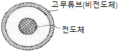
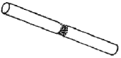
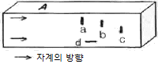
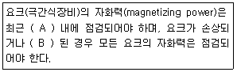

자기비파괴검사산업기사(구) (2007-08-05 기출문제)
1과목: 자기탐상시험원리
1. 축통전법으로 2500[A] 의 전류를 흘렸을 때에 환봉표면의 자계 강도가 50[Oe] 이었다면 환봉의 직경은?
- 5cm
- 10cm
- 20cm
- 40cm
(정답률: 알수없음)

2. 알루미늄 등의 비철금속은 일반적으로 자분탐상시험을 할 수 없다. 그 이유로 가장 옳은 것은?
- 잔류자기가 매우 작기 때문이다
- 자기저항이 매우 크기 때문이다.
- 자화되는 정도가 매우 낮기 때문이다.
- 전혀 자화되지 않기 때문이다.
(정답률: 알수없음)
3. 어떤 자성체가 큐리 온도에 도달하면 자성체는 어떻게 변하는가?
- 자성체의 성질을 그대로 갖는다.
- 자기적 성질을 잃는다.
- 동위원소가 된다.
- 자성체로 남아 있게 된다.
(정답률: 알수없음)
4. 자분탐상검사시 발생될 수 있는 자기펜 자국에 대해 설명한 것이다. 옳은 내용은?
- 자화시킨 시험체에 비자성체가 접속됐을 대 나타난다.
- 강자장에 의해 나타난다.
- 자화된 시험체들이 상호 접촉된 경우에 나타난다.
- 강전류에 의해 나타난다.
(정답률: 알수없음)
5. 자분탐상시험의 신뢰도를 향상시킬 수 있는 방법이 아닌 것은?
- 검사자의 기량을 향상시킨다.
- 적합한 규격을 적용한다.
- 적합한 자화방법을 선정한다.
- 가급적 높은 전류로 검사한다.
(정답률: 알수없음)
6. [그림]과 같이 고무 튜브 내부에 전도체를 관통시켜서 자장을 유도시킬 경우 튜브 외부의 자력선 강도에 대해여 올바르게 설명한 것은?

- 자력선이 발생하지 않는다.
- 튜브의 내부와 동일하다.
- 튜브의 내부보다 더 강하다
- 튜브의 내부보다 약하다.
(정답률: 알수없음)
7. 다음 중 자력선의 방향을 바르게 설명한 것은?
- 자석의 내부에서는 위(E)에서 아래(W)로 흐른다.
- 자석의 외부에서는 북극(N)에서 남극(S)으로 흐른다.
- 자석의 내부에서는 북극(N)에서 남극(S)으로 흐른다.
- 자석의 내ㆍ외부에서 똑같이 남극(S)에서 북극(N)으로 흐른다.
(정답률: 알수없음)
8. 와류탐상원리를 이용하여 도금이나 비금속 코팅층의 두께를 측정할 수 있다. 다음 중 어떤 효과를 이용한 것인가?
- Hall 효과
- 표피효과(Skin Effect)
- Lift-off 효과
- 공명 효과
(정답률: 알수없음)
9. 직경 30mm, 길이 150mm 인 봉을 코일법으로 검사할 때 약 5000암페어ㆍ턴의 자화전류가 필요하다. 장비의 최대 전류가 2500A 라면 시험체에는 최소 몇 회의 코일을 감아야 하는가?
- 1회
- 2회
- 3회
- 4회
(정답률: 알수없음)
10. 자분탐상시험에서 시험면을 태워서는 안 될 경우 선택해야 할 자화방법으로 가장 옳은 것은?
- 프로드법
- 축통전법
- 자속관통법
- 직각통전법
(정답률: 알수없음)
11. 다음 중 열중성자를 이용한 중성자투과시험을 가장 효과적으로 적용할 수 있는 것은?
- 알루미늄합금의 산화피막 두께 측정
- 강주조품의 내부공동 검출
- 강관내부에 위치한 플라스틱 링의 상태 확인
- 스테인리스강 용접부의 결함검출
(정답률: 알수없음)
12. 다음 중 자분지시모양의 형태를 보존하기 위해 사용되는 방법으로 가장 부적당한 것은?
- 전사
- 사진촬영
- 스케치
- 부식, 각인
(정답률: 알수없음)
13. 비파괴적 평가 기법을 능동적 기법과 수동적 기법으로 나눌 때 다음 중 능동적 기법에 해당하는 것은?
- 초음파탐상시험법
- 음향방출시험법
- 잡음 해석법
- 누설검사법
(정답률: 알수없음)
14. 비자성 도체에 전류가 흐를 대 자계의 강도에 대한 설명으로 가장 옳은 것은?
- 도체 중심부가 가장 높다.
- 도체 중심부와 표면사이 중간 지점이 가장 높다.
- 도체 표면이 가장 높다.
- 도체 반지름의 2배 되는 곳이 가장 높다.
(정답률: 알수없음)
15. 자분탐상시험시 선형자화법으로만 구성된 것은?
- 극간법, 축통전법
- 코일법, 축통전법
- 코일법, 프로드법
- 코일법, 극간법
(정답률: 알수없음)
16. 자분탐상시험의 자화방법 중 표면 결함에 대하여 가장 감도가 좋은 것은?
- 교류 - 건식법
- 교류 - 습식법
- 직류 - 습식법
- 직류 - 건식법
(정답률: 알수없음)
17. 자분탐상시험시 원형자계를 이용하여 균열이 검출 되었을 때 균열에 자분이 모이는 원인은?
- 항자력에 의해
- 누설자계에 의해
- 도플러 효과에 의해
- 균열에서의 높은 자기 저항에 의해
(정답률: 알수없음)
18. 다음 중 자화의 방향이 분명하지 않은 시험체를 탈자 할 때의 방법으로 가장 옳은 것은?
- 시험체를 여러 방향으로 회전시키며 반전 자계로부터 멀리하면서 자계의 방향을 바꾸어가며 탈자 한다.
- 시험체를 검사대에 올려놓고 일정한 자계의 세기를 유지하며 반전 감쇠자계를 걸어주어 반복 탈자한다.
- 시험체를 여러 방향으로 회전시키며 반자계의 발생이 많은 방향으로 반전 감쇠자계를 걸어주어 탈자한다.
- 시험체를 검사대에 올려놓고 극성을 바꾸면서 전압을 단계적으로 올리면서 반복 탈자한다.
(정답률: 알수없음)
19. 다음 중 탈자에 대한 설명으로 잘못된 것은?
- 시험체의 잔류자기가 인근 계측기의 작동이나 정밀도에 나쁜 영향을 미칠 수 있을 때 탈자를 수행한다.
- 교류탈자에서는 내부가 잘 탈자되지 않으므로 완전한 탈자를 위해 직류를 이용하는 것이 효과적이다.
- 탈자시 시험체에 걸어주는 교번자계의 방향은 자화시 걸어준 자계의 방향과 직각방향으로 한다.
- 복잡한 형상 부품의 탈자는 시험체에 적용하는 교번 자계의 방향을 여러 가지로 바꾸어 탈자해야 한다.
(정답률: 알수없음)
20. 다음 중 자화 및 탈자의 정도를 알아볼 수 있는 계측기로서 정량적이 계측이 어려운 계측기는?
- FLUX METER
- GAUSS METER
- PIE FIELD INDICATOR
- OERSTED METER
(정답률: 알수없음)
2과목: 자기탐상검사
21. 프로드(prod)법으로 자분탐상검사를 하다보면 접촉 부위에 자분이 축적되는 현상이 나타난다. 다음 중 이를 방지하는 방법으로 가장 적합한 것은?
- 자화 전류를 높인다.
- 프로드의 간격을 좁힌다.
- 습식 자분을 사용한다.
- 자력선의 강도를 낮춘다.
(정답률: 알수없음)
22. 다음 중 자분탐상검사에서 탈자를 하는 주된 목적으로 옳은 것은?
- 결함지시를 정확히 판정하고, 합ㆍ부 여부를 명확히 하기 위하여
- 자분이 제거된 것을 보증하기 위하여
- 작업자의 안전위생과 작업장을 깨끗이 하기 위하여
- 잔류자기가 이 후의 기계 가공을 곤란하게 할 우려가 있을 때
(정답률: 알수없음)
23. 다음 중 자분탐상검사시 자분을 선택할 때 자분의 재질로 가장 부적당한 것은?
- 투자율이 높은 재질
- 보자성이 높은 재질
- 가시성이 높은 재질
- 자극에 대한 흡착 성능이 높은 재질
(정답률: 알수없음)
24. 직경 5cm[2인치], 길이 137cm[54인치] 인 환봉을 코일법으로 검사할 때 탐상시험은 몇 회로 나누어 적용해야 하는가?
- 최소 1회 이상
- 최소 2회 이상
- 최소 3회 이상
- 최소 27회
(정답률: 알수없음)
25. 건식자분의 보관 방법으로 가장 옳은 것은?
- 음지의 습기가 있는 곳에 보관한다.
- 음지의 습기가 없는 곳에 보관한다.
- 양지의 자석과 함께 보관한다.
- 양지의 자외선이 많이 비추는 곳에 보관한다.
(정답률: 알수없음)
26. 원형자계를 이용한 자분탐상검사로 환봉의 직경이 25mm, 길이가 100mm, 코일의 감은 수가 5회일 때 필요한 자화 전류(A)는 얼마인가? (단, 상수 K는 45000 을 이용한다. )
- 500
- 750
- 1200
- 2250
(정답률: 알수없음)
27. 고탄소강과 저탄소강을 용접하여 연삭한 후 이 부분을 자분탐상검사 한 결과 용접부에 [그림]과 같이 많은 량의 지시가 나타났을 때 1차적인 판정으로 다음 중 가장 옳은 것은?

- 결함에 의한 지시로 판정
- 자화전류의 과소에 의한 의사지시로 판정
- 흡착 성능이 낮은 자분을 적용한 지시로 의심
- 두 금속의 투자율 차이에 의한 의사지시로 의심
(정답률: 알수없음)
28. 다음 중 입자크기가 작은 자분을 사용하는 경우에 나타나는 영향을 설명한 것이다. 틀린 것은?
- 자분모양의 관찰에 혼동을 일으키기 쉽다.
- 미세한 결함을 검출하기에 유리하다.
- 시험면이 거친 경우 검출 감도가 낮다.
- 시험면이 젖어 있어도 검사감도에는 전혀 영향이 없다.
(정답률: 알수없음)
29. 실린더를 전류관통법으로 자분탐상검사할 때 자계의 세기가 가장 강한 부분은?
- 필린더의 바깥표면
- 실린더 두께 중앙부위
- 실린더의 양끝단
- 실린더의 내부표면
(정답률: 알수없음)
30. 자분탐상검사에 사용하는 건식자분의 가장 큰 특징은?
- 대량 부품검사에 편리하다.
- 거친 표면상태의 결함검출에 매우 유용하다.
- 미세 결함검출에 유용하다.
- 자분의 색종류가 다양하다.
(정답률: 알수없음)
31. 자분탐상검사로 검출되는 결함으로서 응력이 집중되는 부위 혹은 주변에 나타나며 파괴의 원인이 되는 것은?
- 부식
- 수축공
- 피로균열
- 콜드샷
(정답률: 알수없음)
32. 시험체의 축에 대하여 직각방향으로 직접 전류를 흐르게 하여 자화시키는 방법은?
- 자속관통법
- 극간법
- 직각통전법
- 전류관통법
(정답률: 알수없음)
33. [그림]에서 같은 전류를 사용하였을 때 동일 크기의 결함이 시험체의 내부에 있을 때 A 면에 누설자속이 가장 강하게 나타나는 결함은 다음 중 어느 것인가?

- a
- b
- c
- d
(정답률: 알수없음)
34. 습식자분의 검사 방법으로 틀린 내용은?
- 거치식 장치에서 매일 검사 시작 전 농도를 측정한다.
- 검사절차서에 표기된 시험편으로 점검한다.
- 자분의 농도를 측정하려면 자분액을 가열하여 증발시킨 후 잔류량을 계량한다.
- 물을 자분액으로 사용할 때는 분산제를 첨가한다.
(정답률: 알수없음)
35. 자분탐상검사에 비하여 누설자속탐상검사(Magnetic Field Testing)의 장점이 아닌 것은?
- 자동화 적합
- 결함의 정량 측정 가능
- 복잡한 형상에 적용 양호
- 객관적 시험 가능
(정답률: 알수없음)
36. 제품검사를 위해 비형광 자분을 사용하여 자분탐상검사 수행시의 장점이 아닌 것은?
- 미세한 균열검사에 적합하다.
- 큰 결함에 비교적 많이 사용된다.
- 습식법, 건식법 모두 사용된다.
- 가시광선 아래에서 직접 관찰할 수 있다.
(정답률: 알수없음)
37. 프로드법의 적용에 대한 설명으로 올바른 것은?
- 반자장과 관련이 있다.
- 전류치는 시험품의 직경에 비례하여 증가한다.
- 대형구조물의 부분검사에 적당하다.
- 시험품의 손상이 적다.
(정답률: 알수없음)
38. 시험체 두께가 25mm 이고 프로드 전극의 간격을 12.7cm(5인치)로 하여 검사할 때 필요한 자화전류(A)로 옳은 것은?
- 150
- 300
- 450
- 600
(정답률: 알수없음)
39. 자분적용시기에 대한 설명 중 틀린 것은?
- 직류자화에서는 연속법을 적용한다.
- 강자성체는 잔류법을 적용한다.
- 교류자화에서는 잔류법을 적용한다.
- 강자성체는 연속법을 적용한다.
(정답률: 알수없음)
40. B형 대비시험편에 대한 설명 중 틀린 것은?
- 검사액의 성능 점검에 사용한다.
- 유효자계의 범위 측정에 사용한다.
- 전류관통법으로 적용이 가능하다.
- 탐상장치의 성능 점검에 사용한다.
(정답률: 알수없음)
3과목: 자기탐상관련규격및컴퓨터활용
41. 철강 재료의 자분탐상 시험방법 및 자분모양의 분류 (KS D 0213)에서 A형 표준시험편의 사용 설명으로 거리가 먼 것은?
- 인공흠이 있는 면이 시험면에 잘 밀착되도록 붙인다.
- 시험편의 명칭은 시험체의 자기특성, 검출해야 할 흠의 종류, 크기에 따라 정한다.
- 자분의 적용은 연속법으로 한다.
- 명칭의 분수치가 작은 것만큼 순차적으로 낮은 유효 자계의 강도로 자분모양이 나타난다.
(정답률: 알수없음)
42. 철강 재료의 자분탐상 시험방법 및 자분모양의 분류 (KS D 0213)를 적용하여 전류관통법으로 여러개의 시험체를 동시에 시험하는 경우, 고려할 사항으로 틀린 것은?
- 자계강도와 도체 중심으로부터의 거리 고려
- 코일의 지름과 길이의 관계 고려
- 자기펜 자국이 생기는지의 여부를 고려
- 자계강도와 도체 반지름과는 반비례 관계를 고려
(정답률: 알수없음)
43. 보일러 및 압력용기에 대한 자분탐상검사(ASME Sec. V, Art.7)에따라 자분탐상시험을 실시할 때 시험체의 길이가 9인치, 직경이 3인치 인 강봉을 코일로 5회 감아 코일법으로 자화할 때 요구되는 자화전류 값은?
- 1000A
- 3000A
- 5000A
- 9000A
(정답률: 알수없음)
44. 보일러 및 압력용기에 대한 표준자분탐상검사(ASME Sec. V, Art.25 SE 709)에서 용접부의 오목한 부분이나 시험체의 표면상태, 스케일 등에 의해서 나타난 자분모양을 무엇이라 하는가?
- 관련지시(relevant indications)
- 무관련지시(nonrelevant indications)
- 의사지시(false indications)
- 불연속(discontinuities)
(정답률: 알수없음)
45. 철강 재료의 자분탐상 시험방법 및 자분모양의 분류 (KS D 0213)에 의해 다음 중 가장 높은 유효자계의 강도에서 자분 모양이 나타나는 시험편은?
- A1 7/50(직선형)
- A2 7/50(직선형)
- A1 15/50(직선형)
- A2 15/50(직선형)
(정답률: 알수없음)
46. 철강 재료의 자분탐상 시험방법 및 자분모양의 분류 (KS D 0213)에 규정한 의사모양지시에 해당되지 않는 것은?
- 자기펜자국
- 자극지시
- 표면거칠기지시
- 요염지시
(정답률: 알수없음)
47. 보일러 및 압력용기에 대한 표준자분탐상검사(ASME Sec. V, Art.25 SE 709)에서 습식 자분용액의 주기적인 오염도시험은 최소 며칠 이내의 간격으로 시험하여야 하는가?
- 7일
- 15일
- 30일
- 90일
(정답률: 알수없음)
48. 보일러 및 압력용기에 대한 자분탐상검사(ASME Sec. V, Art.7)에 따른 중심도체법(Central Conductor Technique)을 사용한 탐상시험에서 단일 중심 전도체를 사용하는 경우 검사체를 검사하기 위해 3000A 의 전류가 필요하였다. 만일 2개의 관통 코일을 사용할 경우에는 얼마의 전류(A)가 필요 하겠는가?
- 750
- 1500
- 3000
- 6000
(정답률: 알수없음)
49. 철강 재료의 자분탐상 시험방법 및 자분모양의 분류 (KS D 0213)에 규정된 대비시험편은?
- A1형 시험편
- C형 시험편
- A2형 시험편
- B형 시험편
(정답률: 알수없음)
50. 보일러 및 압력용기에 대한 자분탐상검사(ASME Sec. V, Art.7)의 규정에 대하여 다음 ( )안에 알맞은 것은?

- A : 2년 B : 수리
- A : 1년 B : 수리
- A : 2년 B : 폐기
- A : 1년 B : 폐기
(정답률: 알수없음)
51. 보일러 및 압력용기에 대한 자분탐상검사(ASME Sec. V, Art.7)에 의해 비형광자분을 사용할 경우 지시의 적절한 평가를 위해 시험할 표면의 최소한의 조도는 몇 Lx 인가?
- 20
- 200
- 500
- 1000
(정답률: 알수없음)
52. 철강 재료의 자분탐상 시험방법 및 자분모양의 분류 (KS D 0213)에 따르면 압력용기의 내압시험 후 용접부에 대한 탐상시험은 원칙적으로 어느 방법에 따라야 하는가?
- 극간법
- 프로드법
- 코일법
- 다중자화법
(정답률: 알수없음)
53. 공구강과 일반구조용 강을 접합하여 연삭한 후 탐상한결과 접합부위에 의사 자분모양의 지시가 나타났다. 철강 재료의 자분탐상 시험방법 및 자분모양의 분류 (KS D 0213)에 따른 예상되는 지시는?
- 전류지시
- 자극지시
- 자기펜자국
- 재질경계지시
(정답률: 알수없음)
54. 철강 재료의 자분탐상 시험방법 및 자분모양의 분류 (KS D 0213)에 의한 선상의 자분모양 및 원형상의 자분모양은 어떤 자분모양의 분류에 속하는가?
- 연속한 자분모양
- 독립한 자분모양
- 분산한 자분모양
- 균열에 의한 자분모양
(정답률: 알수없음)
55. 보일러 및 압력용기에 대한 표준자분탐상검사(ASME Sec. V, Art.25 SE 709)의 검사장치 점검 권고기간을 나타낸 것이다. 연결이 틀린 것은?
- 시스템 성능 인정(시험편 이용) : 1일
- 조명 : 1주
- 습식자분 농도 : 1주
- 조도계 : 6개월
(정답률: 알수없음)
56. 뉴스그룹으로서 특정 주제에 대한 정보를 주고받는 일종의 게시판 형식의 인터넷 서비스는?
- BBS
- Gopher
- Usenet
- Telnet
(정답률: 알수없음)
57. 제어프로그램 중 다양한 종류의 데이터 포맷과 파일을 체계적으로 관리해 주는 프로그램은?
- 감시 프로그램(Supervisor Program)
- 작업관리 프로그램(Job Management Program)
- 문제처리 프로그램(Problem Processing Program)
- 데이터관리 프로그램(Data Management Program)
(정답률: 알수없음)
58. 서로 다른 네트워크 구조 및 프로토콜 간을 연결해주는 장치는?
- 방화벽(Firewall)
- 하이퍼텍스트(Hypertest)
- 계정(Account)
- 게이트웨이(Gateway)
(정답률: 알수없음)
59. 도메인의 분류 중 교육기관을 의미하는 것은?
- com
- gov
- edu
- net
(정답률: 알수없음)
60. 사용자로 하여금 모아놓은 여러 개의 검색엔진들 중 원하는 검색엔진 하나를 선택해서 검색할 수있는 것은?
- 메타 검색엔진
- 키워드형 검색엔진
- 디렉토리형 검색엔진
- 로봇 에이전트형 검색엔진
(정답률: 알수없음)
4과목: 금속재료 및 용접일반
61. 정격 2차 전류가 200A, 정격사용율 40%인 용접기의 용접 전류 150A로 아크 용접을 할 때 허용사용률(%)은 약 얼마인가?
- 53.3
- 60.0
- 71.1
- 90.0
(정답률: 알수없음)
62. 다음 용접의 분류 중 저항용접에 해당하는 것은?
- 아크 용접
- 업셋 맞대기 용접
- 원자수소 용접
- 와이어 아크 용접
(정답률: 알수없음)
63. 다음 중 점용접의 3대 요소가 아닌 것은?
- 전극의 재질
- 용접전류
- 통전시간
- 가압력
(정답률: 알수없음)
64. 다음 용접 결함 중 구조상의 결함이 아닌 것은?
- 슬랙 섞임
- 용입 불량
- 변형
- 기공
(정답률: 알수없음)
65. 용접재료에 예열을 하는 가장 중요한 목적은?
- 균열 발생 방지
- 아크 쏠림 방지
- 용접 속도 증가
- 용접봉 절약
(정답률: 알수없음)
66. 피복 아크 용접봉의 용융속도에 대해 설명한 것 중 맞는 것은?
- 아크 전압에 비례한다.
- 아크 전류에 비례한다.
- 용접보의 직경과 전압의 곱에 비례한다.
- 아크 전류와 전압에 반비례한다.
(정답률: 알수없음)
67. 가스용접시 사용되는 산소용기에 표시하는 사항이 아닌 것은?
- 충전가스의 명칭
- 용기 재질
- 용기의 내압시험 압력
- 용기 제조자의 용기번호 및 제조번호
(정답률: 알수없음)
68. 플러그 용접(Plug Welding)에 대한 설명으로 가장 적합한 것은?
- 2개 부재 사이의 휨 부분을 용접하는 이음 방법
- 접합하려고 하는 한쪽의 부재에 둥근 구멍을 뚫고 그 곳에 용접하려 이음하는 방법
- 동일 평면에 있는 2개의 부재를 마주 붙여 용접하는 이음 방법
- 고 진공 중에서 고속 전자 빔에 의한 충격 발열을 이용하여 용접하는 방법
(정답률: 알수없음)
69. 이상화탄소 아크 용접시에 스패터가 많이 발생하는 원인이 아닌 것은?
- 용접 조건의 부적당
- 1차 입력전압의 불균형
- 직류 리액터의 탭 불량
- 이음 형상의 불량
(정답률: 알수없음)
70. 용접 구조물의 용접 순서는 수축변형에 크게 영향을 주며 잔류응력 및 구속응력에도 영향을 준다. 용접순서의 일반적인 원칙이 아닌 것은?
- 수축량이 큰 것은 먼저 용접하고 수축량이 적은 것은 나중에 용접한다.
- 좌ㆍ우는 될 수 있는 대로 중심에 대칭이 되도록 용접한다.
- 긴 용접부는 끝단에서 중앙부로 동시에 용접한다.
- 동일 평면 내에 이음이 많을 경우 수축은 가능한 자유단으로 보낸다.
(정답률: 알수없음)
71. 표점거리의 길이가 50mm 인 재료를 인장시험 후 측정하였더니 55mm가 되었을 때, 이 재료의 연신율(%)은?
- 9
- 10
- 15
- 18
(정답률: 알수없음)
72. 냉간 가공한 금속을 풀림(annealing)하였을 때 내부 조직의 변화를 순서대로 나열한 것은?
- 재결정 → 회복 → 결정립 성장
- 결정립 성장 → 재결정 → 회복
- 회복 → 결정립 성장 → 재결정
- 회복 → 재결정 → 결정립 성장
(정답률: 알수없음)
73. 다음 중 초경합금에 대한 설명으로 가장 관계가 먼 것은?
- 경도가 높다.
- 내마모성 및 압축강도가 높다.
- 고온경도 및 강도는 양호하나 고온에서 변형이 크다
- WC 분말에 Tic, TaC 및 Co 분말 등을 첨가하여 제조한다.
(정답률: 알수없음)
74. 탄성구역에서 변형은 세로방향에 연신이 생기면 가로 방향에 수축이 생기는데 각 방향의 치수변화의 비를 무엇이라 하는가?
- 강성률의 비
- 포아송의 비
- 탄성률의 비
- 전단변형량의 비
(정답률: 알수없음)
75. 베어링에 사용되는 구리합금의 대표적인 켈밋(kelmet)의 주 성분은?
- 70%Cu - 30%Pb 합금
- 70%Pb - 30%Mg 합금
- 60%Cu - 40%Zn 합금
- 60%Pb - 40%Ti 합금
(정답률: 알수없음)
76. 다음 중 형상기억합금에 대한 설명으로 틀린 것은?
- 특정한 모양의 것을 인장하여 탄성한도를 넘어서 서성 변형시킨 경우에도 하중을 제거하면 원상태로 돌아가는 현상
- 주어진 특정모양의 것을 인장하거나 소성 변형된 것이 가열에 의하여 원래의 모양으로 돌아가는 현상
- Ti - Ni합금은 형상 기억효과가 있다.
- 냉각시의 유기 마텐자이트 변태가 일어난다.
(정답률: 알수없음)
77. 다음 중 Ni과 Al의 주된 슬립면으로 옳은 것은?
- {100}
- {110}
- {111}
- {0001}
(정답률: 알수없음)
78. 주철에서 접종처리(lnoculation)하는 목적으로 틀린 것은?
- chill화 방지
- 흑연형상의 개량
- 기계적 성질향상
- 질량효과의 증가
(정답률: 알수없음)
79. 내식성이 좋고 비자성체이며, 오스테나이트 조직을 갖는 스테인리스강은?
- 3%Cr 스테인리스강
- 35%Cr 스테인리스강
- 18%Cr - 8%Ni 스테인리스강
- 석출경화형 스테인리스강
(정답률: 알수없음)
80. 다음 중 황동의 자연 균열 방지책으로 틀린 것은?
- 도료칠
- 아연도금
- 저온응력 풀림
- 암모니아분위기 조성
(정답률: 알수없음)
B = (μ0 * I * N) / L
여기서 B는 자계 강도, μ0는 자유공간의 유도율, I는 전류, N은 촉매의 수, L은 촉매의 길이를 나타낸다.
문제에서 주어진 값으로 대입하면 다음과 같다.
50 = (4π * 10^-7 * 2500 * 1) / (π * r^2)
여기서 r은 환봉의 반지름이다. 식을 정리하면 다음과 같다.
r^2 = (4π * 10^-7 * 2500) / (50 * π)
r^2 = 10^-5
r = 0.01
따라서 환봉의 직경은 2r = 0.02m = 20cm 이다.